A live/work retreat in the red-rock canyon landscape of Sedona, Arizona
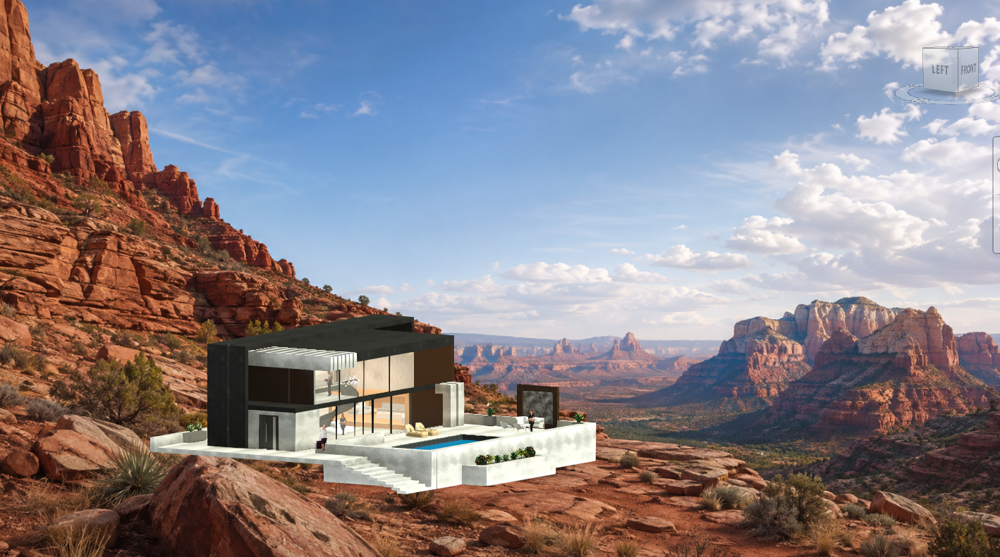
Course: ARCH X482.1-029 — Design Studio I
Instructor: Samuel Mathau, AIA, APA
Role: Student Designer
Assignment: Case Study House Transformation (Problem #3)
Precedent: Case Study House #8 (Eames House) by Charles and Ray Eames
Fictional Client: James Cameron — filmmaker, deep-sea explorer, inventor, and world-builder
Site: Sedona, Arizona
Tools: Autodesk Revit, Adobe Photoshop, Hand Sketching
Cameron's Canyon Studio is a live/work retreat designed for filmmaker, explorer, inventor, and world-builder James Cameron, placed in the red-rock canyon landscape of Sedona, Arizona. The project began with a case study of the Eames House (Case Study House #8) and asked: what principles of live/work integration, structural clarity, and indoor-outdoor continuity could be carried forward into a new context for a new creative life?
The central conceptual decision was the choice of site. Cameron has already explored and created so many worlds — underwater depth and darkness in The Abyss, dramatic sequence and reveal in Titanic, an entire ecological world in Avatar, and real deep-sea expeditions combining exploration, engineering, and storytelling. I deliberately did not want to give him another ocean environment or create another version of Avatar. I wanted to expose him to a landscape that has not been a major world in his work.
The canyon is another extreme environment, but it creates a completely different experience. Where the ocean creates depth below the surface, the canyon creates depth through erosion, geological time, rock layers, cliffs, and voids. A canyon constantly changes between compression and expansion. Light transforms the same red rock throughout the day. There is silence, isolation, geological scale, and a powerful relationship between the human body and something much larger.
The building itself does not need to become the world. The site is the world. The architecture gives Cameron different ways to inhabit it, observe it, frame it, and reinterpret it. Cameron has spent his career creating new worlds for us. Cameron's Canyon Studio gives him a new world to discover for himself.
The canyon as cinematic frame — constantly changing the view and atmosphere
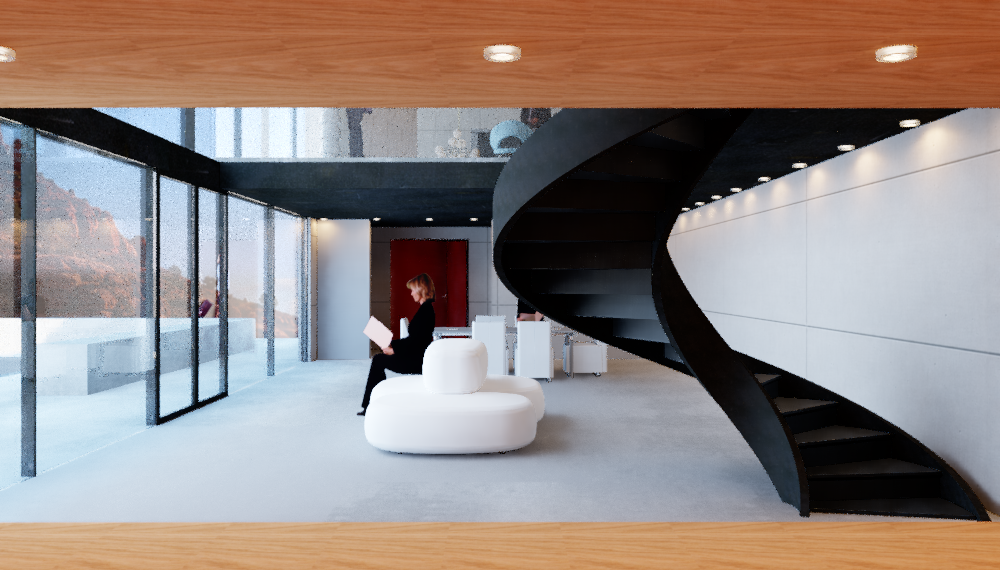
Double-height studio with spiral stair and warm timber niche
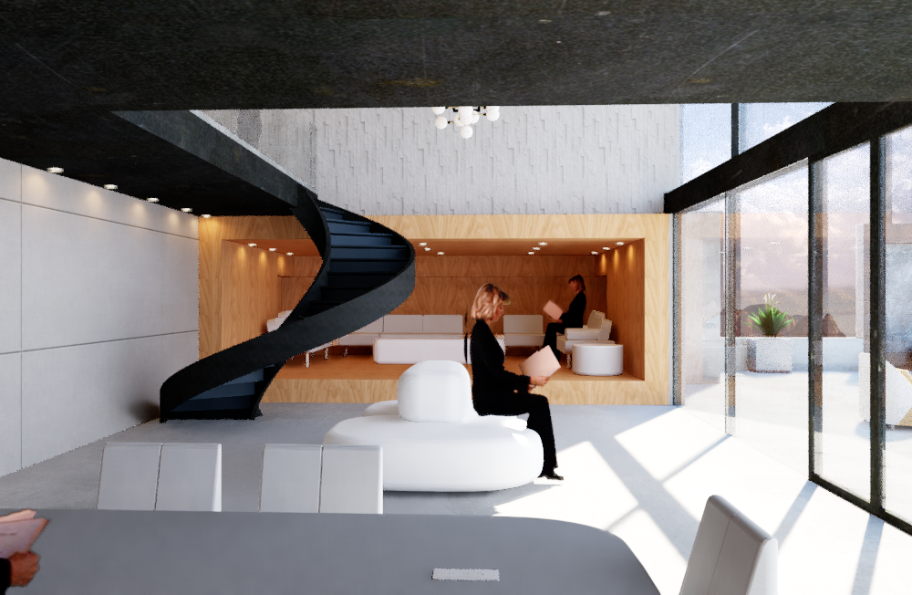
Collaborative lounge with storyboarding niche beyond
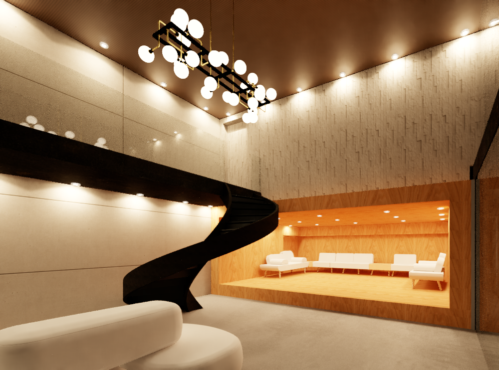
Night view — double-height studio with chandelier and warm timber lounge niche
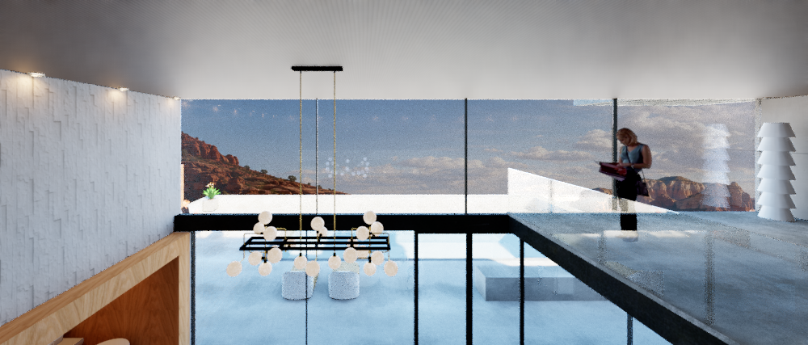
Upper-level overlook — Director's Studio and Screening Room
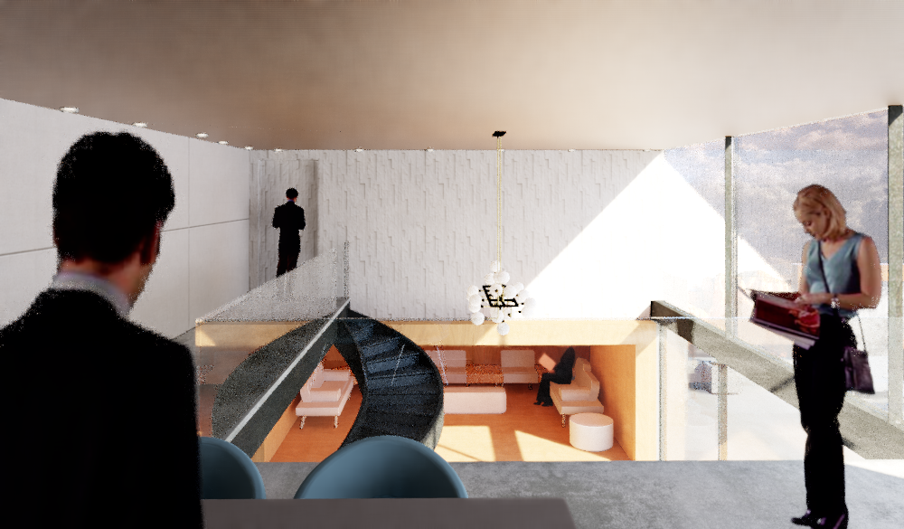
Screening Room view into the studio volume below
In the double-height studio, the dark spiral stair becomes a strong vertical element while the warm timber niche creates a smaller and more intimate place within the larger volume. The glazing keeps the canyon continuously present from inside.
From the upper-level overlook, the Director's Studio and Screening Room remain connected to the collaborative activity below through the open-to-below space. The red-rock environment reflects warm light into the interior throughout the day, so the glazing is not simply an exterior wall — it acts almost as a cinematic frame, constantly changing the view and atmosphere.
A pause between architecture and landscape
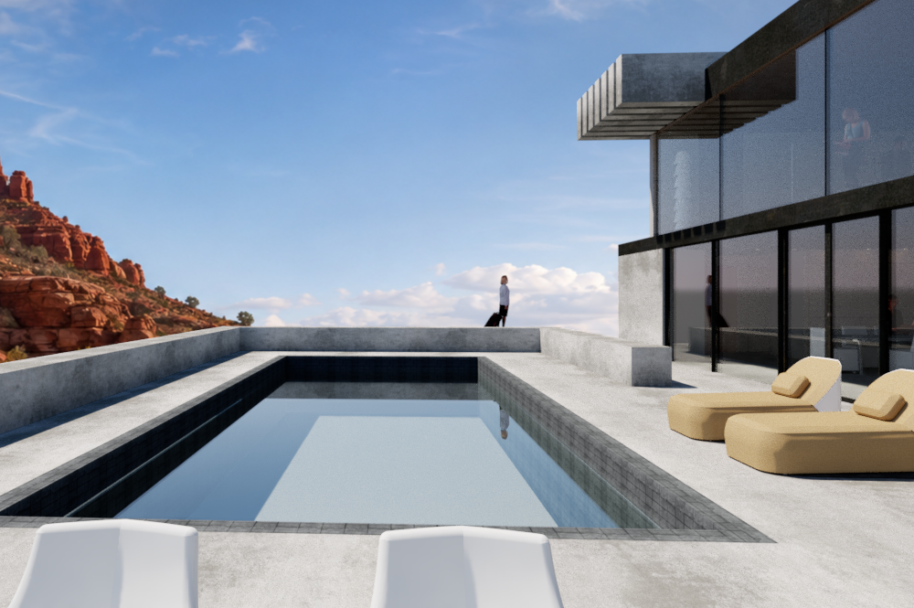
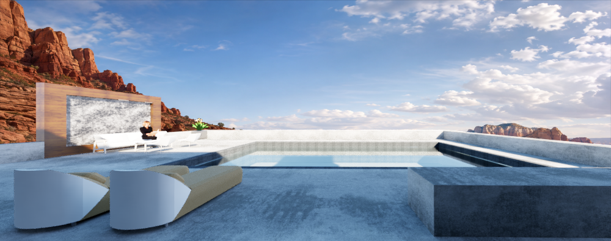
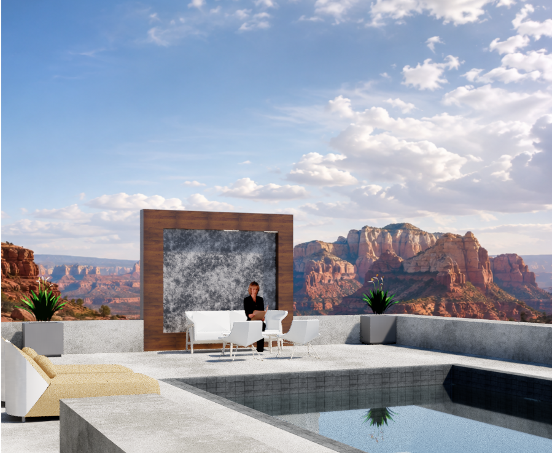
The pool terrace becomes the transition between interior and canyon. I did not use the pool simply as a residential luxury element. The canyon is dry, rough, mineral, and massive. Water is smooth, reflective, and constantly changing. So the pool creates a pause between architecture and landscape.
The outdoor lounge allows collaboration and conversation to continue outside the studio. The quieter water-and-horizon view represents pause and reflection.
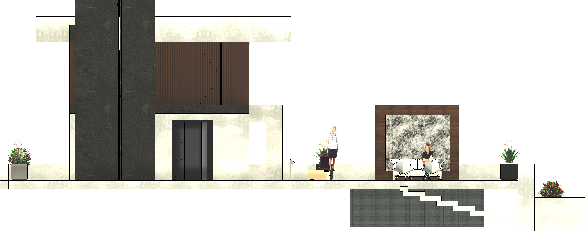
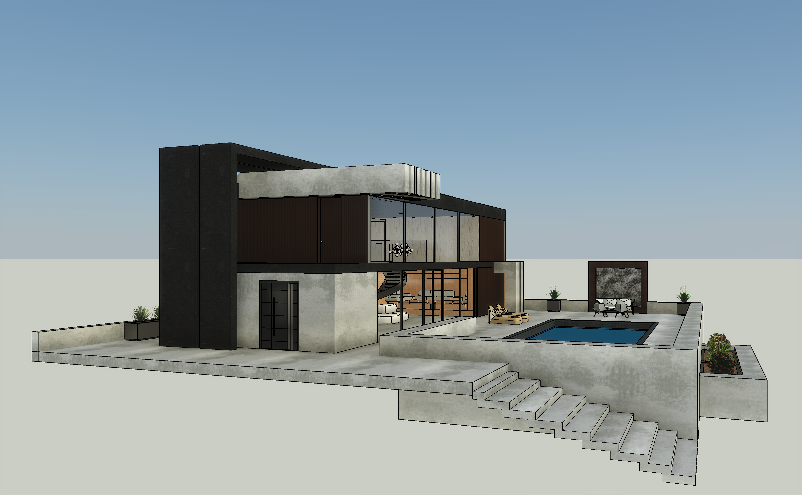
I worked with concrete, dark metal, warm wood, and glazing. Concrete gives the project visual weight and permanence. Dark metal provides structural rhythm and contrast against the warm red landscape. Wood introduces warmth and human scale. Glass is especially important because this project is about observation.
The canyon-facing portions are more transparent while the entry side remains comparatively more controlled, creating a sequence from compression at arrival to openness toward the landscape.
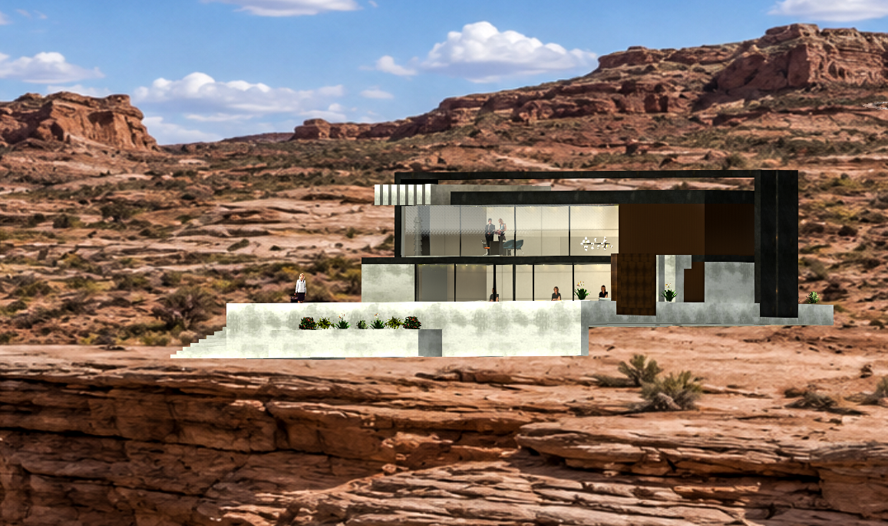
The sections became very important because the project cannot be understood through plan alone. They reveal the double-height studio, mezzanine/work level, full-height glazing, roof edge, lounge below, and the longer live/work sequence — studio volume, stair connection, upper review spaces, warmer lounge niche, and relationship to the pool terrace. The plans helped me solve function; the sections helped me solve volume and experience.
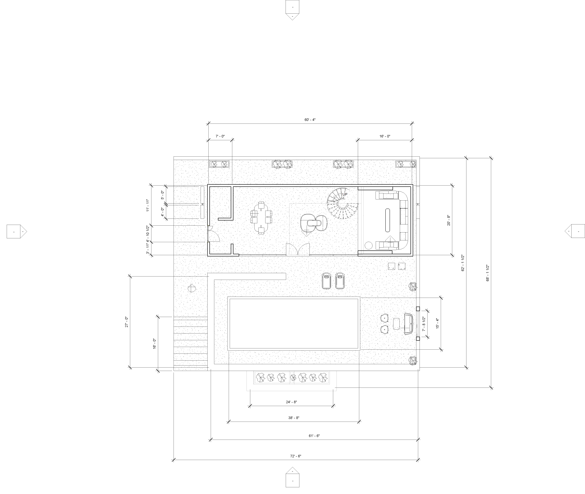
Level 1 Floor Plan
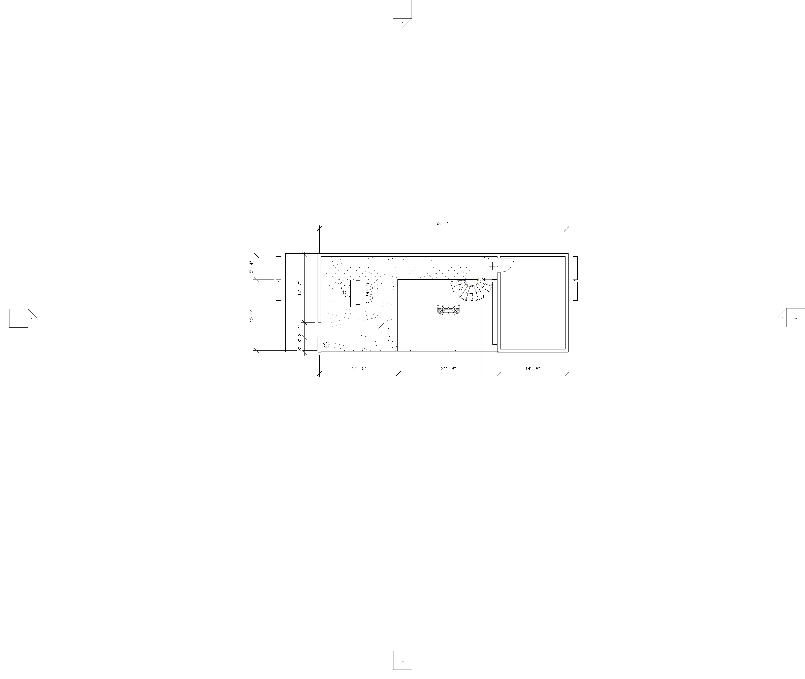
Level 2 Floor Plan
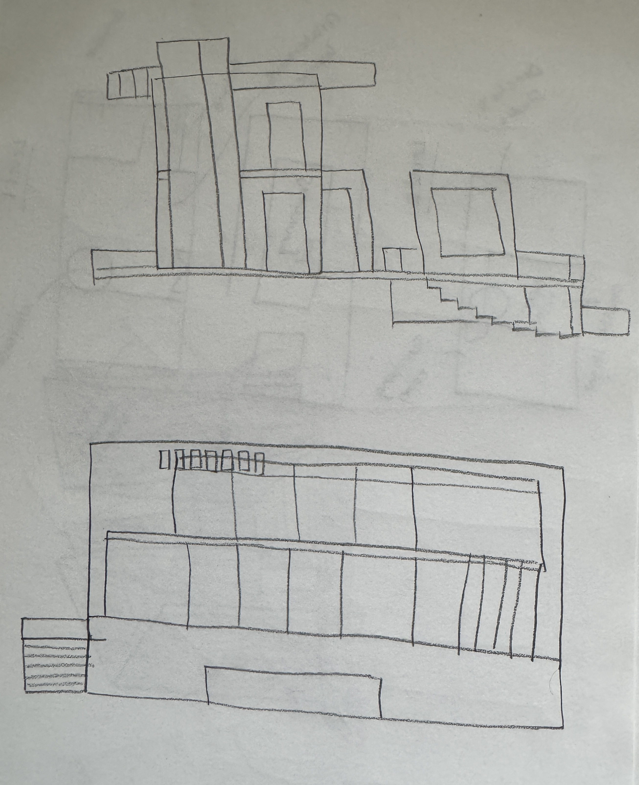
I explored different architectural directions before reaching the final design. The first was a C-plan study, where I explored courtyard enclosure, water, circulation, and an embracing form through plans, perspective massing, elevation studies, a bubble diagram, and façade drawings.
The second option explored cantilevering, projection, shade, and a stronger structural gesture toward the canyon. Each study taught me something — the C-plan helped me understand enclosure, water, and pause; the cantilever study helped me understand projection, shade, and façade rhythm.
Before resolving everything in Revit, I worked through the plans and elevations by hand. I used them to test room relationships, double-height space, staircase, upper level, façade proportions, and pool terrace. They allowed me to study and revise the project quickly before committing to the detailed digital model.
I began with the Case Study House research and selected Case Study House #8, the Eames House, by Charles and Ray Eames. What interested me was not simply its appearance — I was interested in the way it combines living, creative work, structure, flexibility, and landscape.
Through plans, sections, elevations, structure, and façade studies, I identified the main principles I wanted to carry forward:
Live/Work
Integration
Double Height
Space
Structural
Clarity
Indoor-Outdoor
Continuity
Flexibility
& Adaptability
I used the Eames House as a method of organization rather than something to copy formally. My previous Tentacle Folly gave me another layer — the Eames House gives order and framework, while the Tentacle Folly gives atmosphere, movement, controlled light, niches, path, and pause. I wanted these two ways of thinking to meet in Cameron's Studio.
I selected James Cameron because he is much more than a filmmaker. He is also a deep-sea explorer, inventor, engineer, ecological storyteller, and world-builder. When I studied his work, I noticed that he repeatedly enters extreme environments:
From this research, I identified spaces for discovery, narrative, world-building, collaboration, screening, review, reflection, and connection. Those ideas eventually became the actual program of the studio.
This became the most important conceptual decision in my project. I asked myself: James Cameron has already experienced and created so many worlds — what environment could still give him something unfamiliar?
He has explored oceans and underwater darkness. He physically explored the Titanic wreck. He created futuristic technological environments. He created the alien ecosystem of Pandora. So I deliberately chose a landscape that has not been a major world in his work.
For me, the canyon is another extreme environment, but it creates a completely different experience:
The Ocean
Depth below the surface
The Canyon
Depth through erosion, geological time, rock layers, cliffs, and voids
A canyon constantly changes between compression and expansion — you can move through a narrow passage and suddenly experience an enormous horizon. Light is also very important: the same red rock can appear completely different in morning light, afternoon sun, deep shadow, or sunset.
Normally Cameron creates a world first and then develops the technology necessary to show that world to us. In this project, I reverse that process. I give him the world first. The canyon already exists. The studio allows him to live within it, observe it, frame it, and perhaps reinterpret it through future storytelling. I see the canyon as Cameron's next unexplored world.
This project went through many stages — precedent research, client research, multiple conceptual options, hand sketches, bubble diagrams, floor plans, room programming, elevations, sections, site studies, Revit modeling, materials, exterior views, and interior renderings. Each stage helped me solve something different:
Plans
Function
Hand Drawings
Quick Testing
Sections
Volume
Elevations
Proportion
Revit Model
3D Resolution
Renderings
Experience
"The building itself does not need to become the world. The site is the world. The architecture simply gives Cameron different ways to inhabit it, observe it, frame it, and reinterpret it."